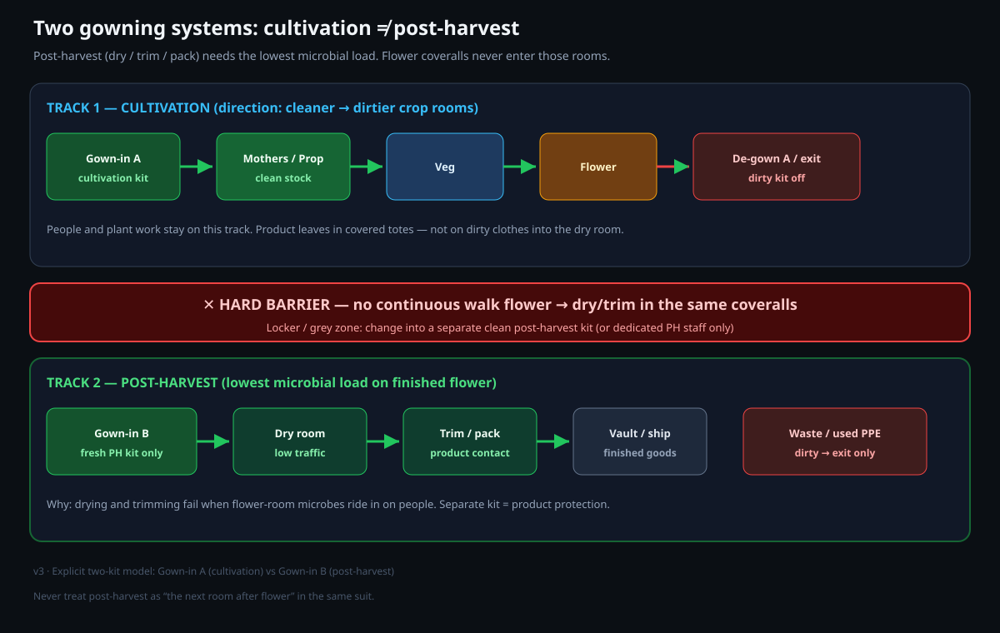
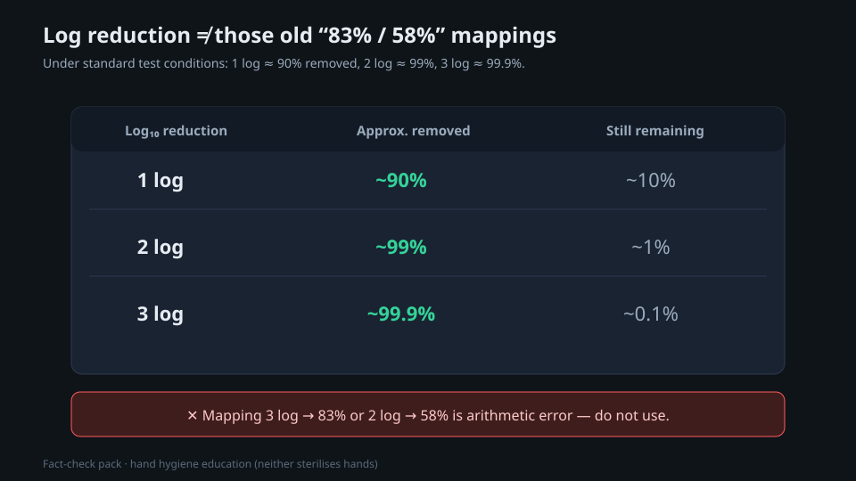

PPPE: plant and personal protective equipment
Coveralls, hairnets, gloves and shoe covers give the worker protection from hazards, and they keep contamination from the worker away from the crop. The contamination is the particles, the microbes and the pests of the worker. A person is the primary source of contamination in each clean production space. This paper gives information about the quantity of contamination that a person releases. It also gives the minimum PPE for each production area and the equipment for each room. It gives the procedures for gowning and hand hygiene that stop contamination at the demarcation line between clean and dirty areas.
Purpose and scope
In a grow room, PPE is not only for you. In most rooms, the equipment gives protection to the plant from you. The contamination is the skin flakes that you release. It is also the spores on your jacket, the mites on your shoes and the viroid on your hands. The same coverall that keeps your clothing clean also keeps your contamination away from the crop. Thus the name is PPPE: plant and personal protective equipment.
Persons are typically the primary source of contamination in each clean space. The percentage is different in different facilities.[1] A person cannot stop the particles that the person releases. You can only put a barrier around the person and control the movement of the person through the building.
One contaminated mother plant, or one glove that you use for more than one plant, can cause Hop Latent Viroid infection in the full crop. In tests, the infection of related cuttings can include almost all the cuttings of the group in some weeks after propagation from infected stock.[6] The movement of the infection is mechanical: it is on tools, cuttings and hands. It is not in the air. A change of gloves for each plant and the gowning procedure are not only checks for compliance. They give protection to the crop.
In cultivation, in drying and in trimming, PPE gives protection to the product. In extraction, the function changes: PPE gives protection to the worker (solvents, fire). In the vault, PPE is mostly for security. The name is the same, but the function and the equipment are different. This paper is about biosecurity. It also gives the legal duties that apply to all of these areas.
Definitions

Evidence and limitations
We want each paper to be correct. Thus we examine each paper for information that is not solid. This information comes from the view of one grower, from a small number of sources, or from grower methods that have no controlled test. We identify this information, and we do not show it as solid.
Frequently there is no paper for the decision that you must make. Then we use the reports of other growers and the methods that work in the rooms that we know. This information can help you, but it is not the result of a laboratory test. Use the methods that work for your plants, for your room and for your meters. If a table does not agree with your crop, use the data from your crop and record the difference.
- Persons are a primary vector of contamination. HpLVd can move on tools and on hands.
- The log reductions for hand hygiene use a log scale. In test conditions, they are approximately 90%, 99% and 99.9%.
- The flow of personnel is from clean to dirty areas. The flow of waste is from dirty areas to the exit.
- The sequence of gowning, and models with two kits, for cultivation and for post-harvest.
- The NZ HSWA structure for PPE, where it is applicable.
- One value of 70 to 90% for the part of cleanroom contamination that persons cause, as a constant for all conditions.
- The contamination of a phone compared with a toilet seat, as an accurate measure of biosecurity.
If you find an error, make a report. We will correct it. Make the report on GitHub, with the name of the paper and the information that is incorrect. If you have a source, include it: Make a report of an accuracy problem. The regulations, labels and licenses of your area always override each procedure in these papers. The label weak in a paper shows the points where the risk of an error is highest.
Risks of contamination from personnel
A person in a cultivation room is the primary source of contamination in the space. The person releases particles, microbes and pests all the time, only because the person is in the room.
- Movement increases the quantity of particles. A person in a gown releases approximately 100,000 particles each minute when the person does not move. The person releases approximately a million when the person walks, and a maximum of five million when the person works fast.[1] Slow movement is a control.
- Your phone is a fomite that you touch frequently. A phone has skin microbes and microbes from the environment on it. The phone goes to your head and back to your hands all day.[4]
- Your shoes move pests and spores. The soles have viable pathogens and fungal spores on them. When you walk, the organisms on the floor go into the air again.[5] Mites and powdery mildew come into the room on clothing and footwear.
- A toilet makes a plume of aerosol. When a person flushes the toilet, aerosol goes to a height of approximately 1.5 m (4.9 ft) in seconds. The aerosol stays viable for minutes to hours. A closed lid decreases the aerosol by a large quantity.[8]
A hand wash helps, but it does not sterilize the hands. In test conditions, an alcohol rub frequently gives approximately 2 to 3 log reductions (approximately 99 to 99.9%). Soap and water remove soil and many organisms, but they do not sterilize the hands.[7] Thus you do hand hygiene frequently, at each change of area. Gloves and barriers give the remaining protection.
Minimum necessary PPE
You must use a baseline of PPE to go into each production area or handling area. Add the items for a specified room after this baseline. The baseline agrees with the personnel regulations for food GMP[9] and with the WHO good agricultural and collection practice[10].
- Clean outer clothing for this area only, which you put on at the entrance (gown, smock, scrubs or coverall). Do not use your street clothes.
- Hair and beard cover. Put a bouffant or a hairnet on all of your hair. Put a beard cover on facial hair.
- Single-use nitrile gloves. Use gloves that have no damage. Replace a glove when it has damage or contamination.
- Footwear for this area only: room shoes or shoe covers. Do not use the boots that you wore in the parking area.
- Hand hygiene. Do hand hygiene at the entrance, after contamination and after you are away from the area.
- No personal items. Keep your phone, jewelry, watch and makeup in a locker before you go into the area.
Remove jewelry, watches and makeup before you put on clothing. Keep your phone in a locker. You cannot clean these items, and they release particles. A ring or a watch holds bacteria between the item and the skin. A glove then holds the bacteria against the crop.

PPE for each room
The grade of PPE is different for each room, because the value of the contents and the risk to the contents are different. Do not use the same PPE in all rooms. Use the highest grade where the genetics are, and where the product is open and goes to a patient.
| Zone | PPE grade | Primary items |
|---|---|---|
| Tissue-culture lab | Aseptic / ISO-5 | Scrub the arms to the elbows. Use sterile gloves and a lab coat. Work in a laminar-flow hood. Do not use jewelry. |
| Mother / propagation | Highest biosecurity | Full gown. New gloves for each plant. Tools for this room only. Work in this room first in the day. |
| Dry / cure | Cleanroom grade | The product is open, and the microbial specification is a release gate. |
| Vegetative stage / flowering stage | Standard gown | Gown, hairnet, gloves, footwear for this room only, sticky mat at the door |
| Trim / packaging | Food-contact grade | Hairnet, beard net, gloves, smock. Change the gloves frequently. |
| Vault / storage | Minimum (security) | Gloves to keep the product clean. The controls are mostly for security. |
A contractor or a visitor is the same contamination risk as personnel. Frequently the risk is larger, because the contractor or visitor was in a different area before. Make sure that they put on the PPE that is necessary for the room. Or do not let them go into mother rooms, propagation rooms, tissue-culture rooms and dry rooms. Make a record of each time that a person goes in.
Gowning procedure
The sequence is important. Put on the PPE from the top to the bottom. Thus the particles that you release when you put on the clothing fall on parts of the body that have no clothing at this time. At the same time, you go across the demarcation line between the dirty area and the clean area.[13]
When you go out, remove the most contaminated items first. Do not touch the outer surfaces of these items. The sequence is: outer gloves, boot covers (when you go back across the demarcation line), coverall (remove it inside-out), eyewear, hood, mask (touch only the loops), hairnet and inner gloves. Then wash your hands. Put the single-use items in the correct bin in the anteroom.
Hands and gloves
Hands move most of the contamination from one area to a different area. Thus hand hygiene is the task that you do most frequently in the building. Do hand hygiene at the entrance, and before clean work or aseptic work. Do it also after waste or contamination, after you are away from the area, and when you go in again.[11]
A glove is a barrier. It is not a clean hand. Wash your hands before you put on gloves and immediately after you remove them.[12] Change the gloves between plants in mother rooms and propagation rooms. Also change the gloves when they touch a surface that is not clean. A dirty glove moves viroid from one plant to a different plant as much as a dirty hand.
Frequent errors of compliance
Phones and personal items
Do not put phones, earbuds, jewelry, watches or makeup into production areas or clean areas. A phone is a fomite that you hold to your head, and you cannot clean it.[4] Put all of these items in lockers before you go into the gowning room.
The toilet
A toilet must not have a door into a production area. When a person flushes a toilet, viable bioaerosol goes to a height of more than 1 m (3 ft) in seconds.[8] Thus a person who comes back from the toilet can move contamination into the area. The risk continues until the person washes the hands and does the gowning procedure again.
Food, drink and break areas
Do not eat, drink, use chewing gum or use an electronic cigarette in a production area. Before you go to a break area, do the de-gowning procedure. When you come back, wash your hands and do the gowning procedure again.
Footwear and the floor
Cross-contamination: flow in one direction
Duties in HSWA 2015
In New Zealand, PPE and hygiene are legal duties in the Health and Safety at Work Act 2015 (HSWA). They are not only good procedures.[14] WorkSafe monitors the compliance with these duties.[15]
- Make sure of the health and safety of workers, as far as is reasonably practicable (s36).
- Apply the higher controls before you use PPE.
- Supply PPE and replacements. Make sure that the workers have no cost for PPE (s27).
- Give information, training, supervision and sufficient facilities.
- Use reasonable care for their safety and for the safety of other persons (s45).
- Obey the reasonable instructions. Put on the necessary PPE. Obey the SOPs for gowning and hygiene.
- Do not use safety items incorrectly. Do not change them or cause damage to them.
- Visitors have the same duties: use reasonable care and obey the instructions.
PPE comes after the higher controls and gives more protection. You must continue to use the higher controls.[15] First, make the rooms, the airflow and the flow correct to remove the hazard. The gown holds the contamination that stays. The business has the cost of the PPE. It is an offense to give a worker the cost of PPE that is necessary.[14]
Reference list
Think of each glove and each gown as protection for the plant first. A person releases millions of particles each hour. The person cannot stop the particles. The suit, the sequence, the flow and the hand wash keep these particles away from a crop. One contaminated touch can cause very bad damage to a crop.
References
- Cleanroom contamination analyses: personnel are typically the dominant contamination source (industry figures often cite a large majority; exact share varies by facility); a gowned worker emits ~100,000 particles/min at rest, ~1,000,000 walking, up to ~5,000,000 in active work. (source not from a journal, for example from a manufacturer) https://www.precgroup.com/70-percent-of-cleanroom-contamination/
- Noble / CDC Emerging Infectious Diseases: humans disseminate ~10^7 skin squames per day, of which roughly 10% carry viable bacteria. https://wwwnc.cdc.gov/eid/article/7/2/70-0225_article
- Human microbial-emissions research: an occupied space gains roughly 37 million bacterial and 7 million fungal genome copies per person per hour above the unoccupied baseline. https://pmc.ncbi.nlm.nih.gov/articles/PMC7950481/
- Mobile phones as fomites: high-touch devices carry skin and environmental flora (methods and comparisons vary across studies), isolates including S. aureus, E. coli and Candida. https://pmc.ncbi.nlm.nih.gov/articles/PMC3939586/
- Shoe-sole and floor contamination: soles carry MRSA, C. difficile, E. coli and other organisms; walking re-disperses settled organisms, contributing a meaningful share of airborne CFU. (source not from a journal, for example from a manufacturer) https://www.infectioncontroltoday.com/view/shoe-sole-and-floor-contamination-new-consideration-environmental-hygiene
- Mechanical transmission and management of Hop Latent Viroid (HLVd) in cannabis: spread via contaminated tools and cuttings; under experimental conditions linked cuttings can approach complete infection within weeks; controls include fresh gloves per plant, tool sterilisation and footbaths. Plants (MDPI) 2025, 14:830. https://www.mdpi.com/2223-7747/14/5/830
- Comparative hand-hygiene efficacy: alcohol-based handrubs often achieve ~2–3 log reductions of transient flora under test conditions (~99–99.9%); soap and water remove soil and many organisms but neither sterilises hands. (Note: 1 log ≈ 90%, not ~58–83%.) https://www.ncbi.nlm.nih.gov/pmc/articles/PMC117885/
- Toilet-flush bioaerosol ('toilet plume'): a flush lofts aerosols to ~1.5 m within seconds; particles remain viable for minutes to hours, and a closed lid produces markedly less aerosol. https://pmc.ncbi.nlm.nih.gov/articles/PMC9732293/
- US FDA. 21 CFR 117.10, Personnel (current good manufacturing practice for food): clean outer garments, personal cleanliness, hand washing, hair restraints, glove integrity. (source not from a journal, for example from a manufacturer) https://www.ecfr.gov/current/title-21/chapter-I/subchapter-B/part-117/subpart-B
- World Health Organization (2003). WHO guidelines on good agricultural and collection practices (GACP) for medicinal plants. (source not from a journal, for example from a manufacturer) https://www.who.int/publications/i/item/9241546271
- World Health Organization. Hand hygiene: the Five Moments and recommended technique (soap-and-water 40-60s; alcohol-based handrub 20-30s, ≥60% alcohol). (source not from a journal, for example from a manufacturer) https://www.who.int/teams/integrated-health-services/infection-prevention-control/hand-hygiene
- US CDC. How to safely remove gloves: glove-to-glove then skin-to-skin, peeling inside-out so bare skin never contacts the contaminated exterior; hand hygiene before and after. (source not from a journal, for example from a manufacturer) https://www.cdc.gov/ebola/media/pdfs/2024/05/poster-how-to-remove-gloves.pdf
- GMP / cleanroom gowning and de-gowning procedures: top-to-bottom donning order across a clean/dirty demarcation bench, reverse dirtiest-first removal. (source not from a journal, for example from a manufacturer) https://www.pharmanow.live/pharma-manufacturing/cleanroom-gowning-procedures-guide
- Health and Safety at Work Act 2015 (NZ): s36 PCBU primary duty of care; s45 worker duties; s27 PCBU must provide what is required (including PPE) and must not charge workers for it. (source not from a journal, for example from a manufacturer) https://www.legislation.govt.nz/act/public/2015/0070/latest/DLM5976894.html
- WorkSafe New Zealand and the Health and Safety at Work (General Risk and Workplace Management) Regulations 2016, reg 6: control risk by the hierarchy of controls, with PPE as the last resort. (source not from a journal, for example from a manufacturer) https://www.worksafe.govt.nz/managing-health-and-safety/getting-started/introduction-hswa-special-guide/
Each citation in the paper, for example [1], refers to an item in this list. Each item is a primary source or an instruction from an authority, unless the item shows a different type. The results of cannabis tissue culture change much with the genotype. Before you use the dilutions, hormone doses and local regulations, make sure that they agree with the primary sources.